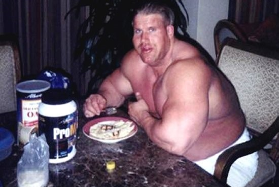
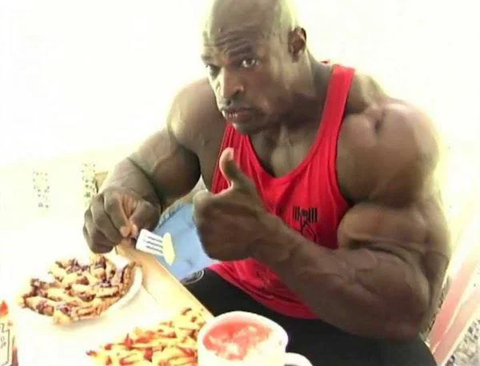
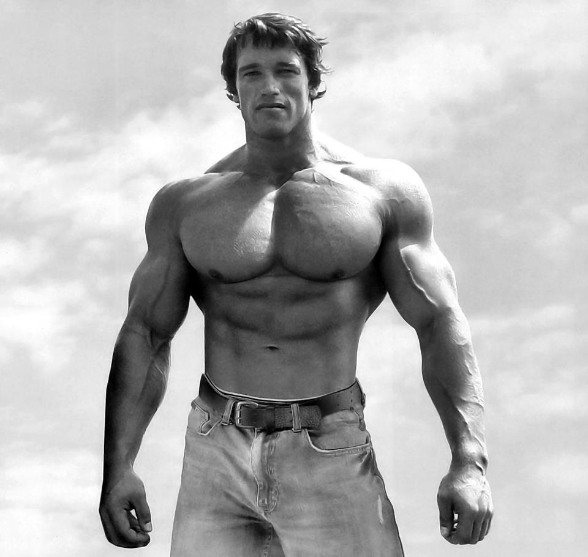

Tekmovalnost
Bodybuilding je ena najbolj tekmovalnih športov na svetu! Vsi z celega sveta
tekmujejo gdo je "Največja mašina". Zaradi tega se tudi vsi potiskajo do svojih
meja in probajo pokazati svojo najboljše telo! Zaradi tega se večina bodybuilderjev
odloči za jemanje steroidov!
EVERY EDGE COUNTS!

Pomembnost
Menda si je vsak že mislo, mm toti pa dobro zgleda, in jaz bi tudi rad tako zgledal. Zato
je bodybuilding scena tako pomembna saj, da ljudem cilj (seveda neresničen) vendar vseeno cilj, da bi tako izgledali
s tem si izboljšajo slabše navade in napravijo disciplino!

Legacy
Vsak bodybuilder si želi nekaj predpostavit in opravit, recimo arnold je
inspiracija za veliko ljudi z svojimi masnimi prsi!